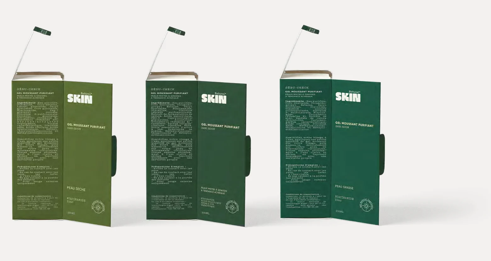
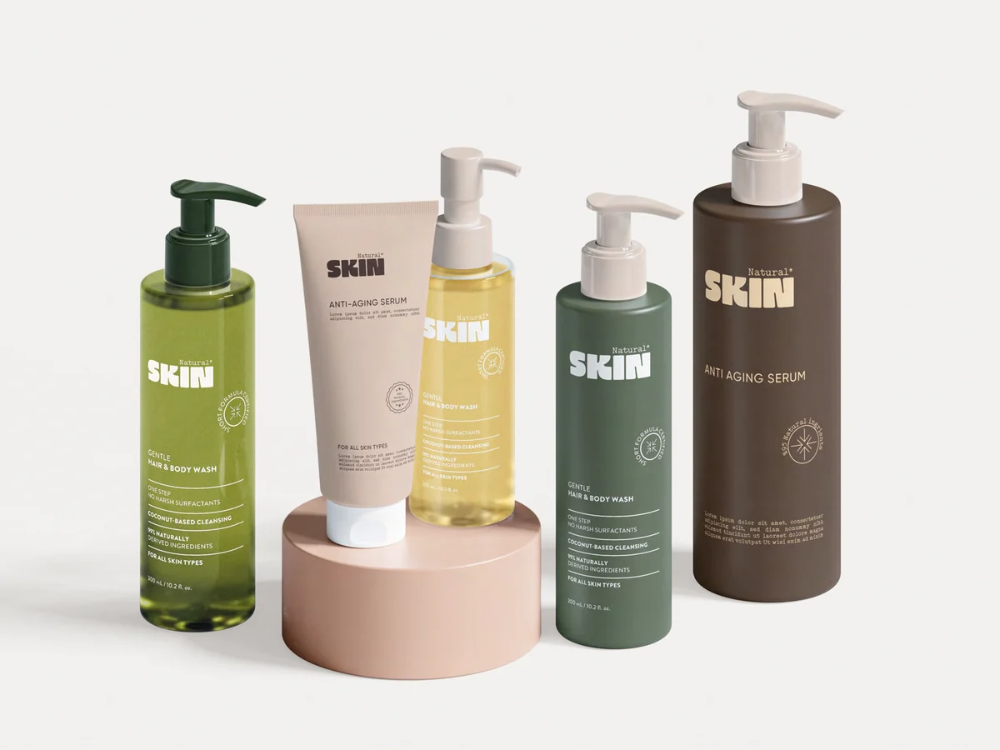
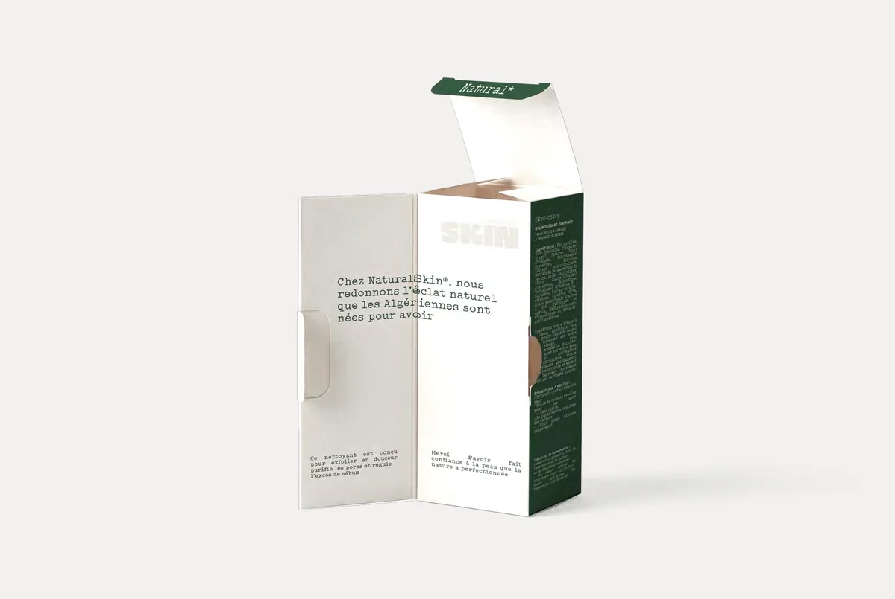

A natural-origin story that still had to read as clinically credible — botanical enough to be believed, disciplined enough not to tip into decoration. Three years later it had earned a sub-brand, and the question became how little of the parent that sub-brand should carry.
Three leaves in the shape of a T. Then the same name in a different voice.
Part one
Natural Solution
The parent. Food supplements and phytotherapy through pharmacies, and a catalogue nobody could size in advance.
Context
Natural Solution sells food supplements and phytotherapy through pharmacies — a category where the natural-origin claim is the reason to buy and simultaneously the reason to doubt.
The catalogue was already broad when the work started, and it kept growing. Any system had to be designed for a product count nobody could predict.
Challenge
Two failure modes sat on either side. Lean too far into botanical and the range reads as health-food and loses the pharmacy. Lean too far into clinical and the natural-origin claim — the whole proposition — disappears.
Underneath that, a scale problem: thirty-odd products need to look related without looking identical, or a customer cannot find the one they were sent in for.
Delivered
Creative direction across the identity and the packaging direction for the full catalogue, plus the promotional and presentation templates the brand's own team would use between projects.
Approach
The mark is three leaves arranged to form the letter T — botanical content, typographic discipline. The argument is settled inside the logo, which is what lets everything downstream stop arguing about it.
The colour rule does the rest of the work: deep ocean blue against yellow-green, and the green is never allowed to stand alone. One sentence, and it is what keeps the range out of health-food territory across every product added since.
Six logo formats were drawn up front, because a mark that has to sit on a jar lid, a pharmacy shelf and a phone screen is really three marks. Drawing them all is what stopped the brand improvising them later.
The sub-brand
After three years the partnership produced Natural Skin, and the decision that mattered was how little of the parent it would carry.
A sub-brand is only worth creating when the parent has recognition to lend, and skincare is bought on warmth where phytotherapy is bought on precision. One visual language cannot ask for both without conceding half of each — so what was lent was the name, the typeface, and the argument about how to be credible and natural at the same time. Not the look.
That the lending could be this selective is the evidence the parent had become a brand rather than a style.
Six formats: horizontal, vertical, compact, social, print, simplified.
Gilroy — humanist enough to carry the botanical claim, geometric enough to hold the clinical one.
Deep ocean blue against yellow-green. The green never stands alone.
Direction across a catalogue that grew past thirty products without the system being redrawn once.
Promotional and presentation templates, so three years of output stayed recognisably one brand.


Part two
Natural Skin
The sub-brand, year three. Skincare for urban Algeria, sold through the same parapharmacy counter and addressed in a different voice.
Audience
Women of eighteen to thirty-five in urban Algeria — social-first, curious about skincare, buying on a parapharmacy recommendation rather than an advertisement. They want the premium sensation without the premium price, and they want to be taught something. The brief was explicit that this is not an audience asking anyone to repair their skin.
Behind them sits the second audience that actually stocks the range: parapharmacy and pharmacy buyers, who care about credible advice, clear instructions and being able to match a customer to a product without reading the back of the carton.
Position
The category offers two failed registers. Falsely organic, which no pharmacy buyer believes, and clinically cold, which the audience does not want. The brand is written to be neither: calm premium with a rebel streak of honesty — soft on skin, strong on integrity.
So the naturalness is never argued in words. There is no ingredient rhetoric on the front of the pack. It is carried instead by the palette, by leaf-scale photography, by real skin at real magnification, and by leaving space — while the typography, the spacing and the studio lighting carry the credibility. Both halves have to be present at once, and neither is allowed to win.
Approach
The wordmark is the break. Where the parent is wide and light, Natural Skin is heavy, rounded and tightly set, with Natural held above it in Typo Writer — a mono voice that then runs through every line of body copy on the pack. The rule attached to it is that the mark is used as a clean stamp and never decorated: the organic feeling is asked of the photograph, the shadow and the composition, not of the logo.
Gilroy is the thread back to the parent, which is the one piece of the system that did not change.
Products are named as diagnoses rather than promises — Sébu-Check for combination and oily skin, Xéro-Check for very dry and sensitive. The suffix is the same across the line, so the range reads as one method applied to different problems. Every pack carries English, French and Arabic, and a sealed percentage rather than an adjective: ninety-five per cent natural ingredients, ninety-seven on the drier formula.
The ritual is named in three words, each of which appears with the brand's asterisk — Nettoyer*, Respirer*, Rayonner*. Clean, breathe, and the honest luminosity that follows, as against glossy perfection.
Heavy rounded capitals, tightly set, with Natural above in mono.
Gilroy, inherited from the parent, against Typo Writer for the mono voice — the one that carries the instructions, the claims and the ritual words.
Coffee, skintone, sand and olive — warm neutrals for the skin tones the brand is speaking to, off-white for parapharmacy credibility, and a deep olive for permanence.
The depth of the green encodes the skin type, light through to dark, so a buyer matches a customer to a carton across the shelf without reading anything. It is the same trick as the parent's colour rule, doing a different job.
An open-face structure: clean luxury outside, a warmer message on the inner face. Built deliberately for the unboxing video and the parapharmacy display, which is where this audience actually meets the brand.





A flexible identity built to scale alongside the brand’s expanding catalogue — and it has, for three years, far enough to carry a sub-brand of its own.
A short verified quote from Natural Solution, tied specifically to this project, belongs here. Left empty until it is supplied and cleared.